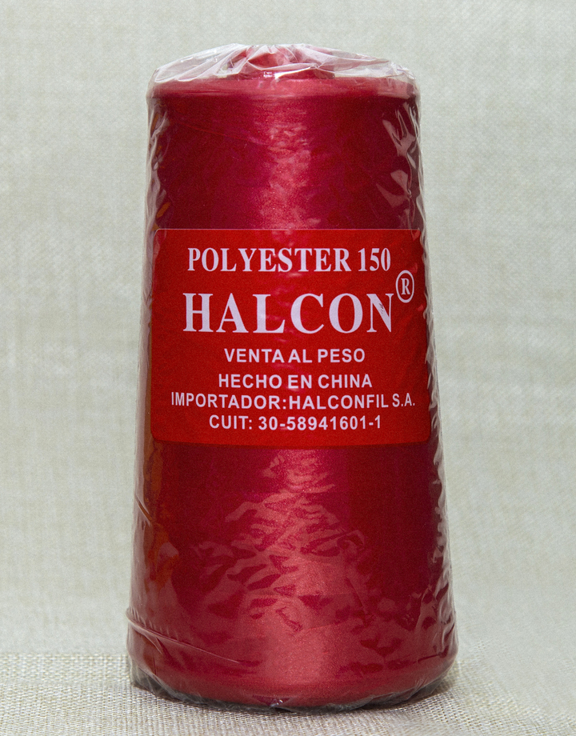

La Casa De Los Hilos
Home
Sobre Nosotros
Productos
Colores
Recta
Over
Jean (20/3)
Jean (24/2
Contacto
Nuestros Hilos
Hilo 120 para recta (40/2)
Utilizado para la confección de prendas livianas como: camisas, lencería, ropa blanca, ropa interior, ropa de niños, deportiva, etc.
Conos de 4.000 metros.
Carta de 250 colores.
Marcas: Halcón y Landi (solo Negro, Blanco y Azul marino).

Hilo 120 para recta (40/2)
-Utilizado para la confección de prendas livianas como: camisas, lencería, ropa blanca, ropa interior, ropa de niños, deportiva, etc.
-Conos de 4.000 metros.
-Carta de 250 colores.
-Marcas: Halcón y Landi (solo Negro, Blanco y Azul marino).
Nuestras Maquinas
Recta automática Shunfa modelo S610
-Motor de bajo consumo (ruido cero).
-Luz led incorporada.
-Regulador de puntadas digital.
-Posicionamiento de agujas.
-Atraque automatico.
-Contador de Puntadas.